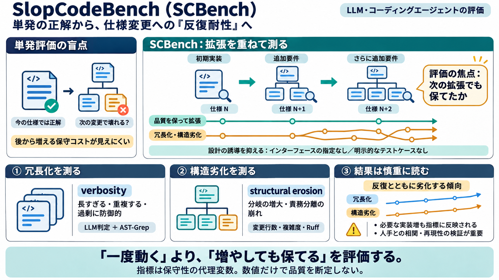

SlopCodeBench: Benchmarking How Coding Agents Degrade Over Long-Horizon Iterative Tasks
Across 11 models and 20 iterative problems, no agent solves a problem end-to-end. Verbosity rises in 90% of trajectories…

LLMやコーディングエージェントが、仕様が増えるたびにコード品質を保ちながら拡張できるかを「反復（チェックポイント）」として評価します。
SWEベンチは「ある時点を1回直す」評価になりがちで、次の仕様変更で壊れる原因（設計の足かせ）が見えにくい問題があります。
SCBenchでは「slop」を、雰囲気ではなく測定できる特徴として扱い、表層の冗長さと構造のひずみを分けて追います。
補足：ここでの「slop」は“全体が不正解”という意味ではなく、保守性を損ねる傾向を指します。
初期実装 → 追加要件 → さらに追加要件、のように複数段階で拡張させ、どの時点から劣化が目立つかを見ます。
品質を1点に潰さず、冗長化（verbosity）と構造劣化（structural erosion）を別々の観測手段で定量化します。
公開された別要約では、チェックポイントが進むにつれ verbosity / structural erosion が増える割合が高いと報告されています。
注意：比較はサンプリング履歴ベースで、厳密な制御実験ではない可能性が言及されています。
モデルがテンプレで埋めるのではなく、拡張耐性に関わる設計選択が観測されるよう、インターフェースやテストを与えにくい設計になっています。
違いは「いつ測るか」です。単発は“その時点での正解”寄り、SCBenchは“次の拡張で壊れるか”を見ます。
主観リスクを下げるため、LLM判定（柔軟）とAST-Grep / Ruff（機械的）を併用します。
デルタLOCや複雑度、Lintエラーは“悪”の代理変数になり得ますが、必要な条件分岐やスタイル適合のケースでも上がるため解釈に注意が要ります。
要約情報では、モデル設定（thinking / non-thinking）によって拡張時の“強引さ”が変わる可能性が示唆されています。
解釈：設計段階での抽象化が、verbosity と erosion の進行速度に影響し得る。
SCBenchの最大の価値は、「単発成功」ではなく仕様変更が積み上がる状況で、保守性劣化（verbosity / structural erosion）がどう進むかを測る点にあります。 指標の妥当性検証（人手相関・境界ケース・再現性）を進めれば、反復開発ベンチとしての説得力がさらに強まるはずです。
Across 11 models and 20 iterative problems, no agent solves a problem end-to-end. Verbosity rises in 90% of trajectories…
verbosity in 75.5%. Compared to 473 open-source Python repositories, agent code is 2.3x more verbose and 2.0x more erode…
rate is 17.2%. Quality degrades steadily: erosion rises in 80% of trajectories and verbosity in 89.8%. Against 48 open-s…
This paper introduces SlopCodeBench (SCBench), a language-agnostic benchmark designed to measure how AI coding agents ma…
Quality degrades across checkpoints, with structural erosion rising in 77% of trajectories and verbosity in 75.5%. Compa…